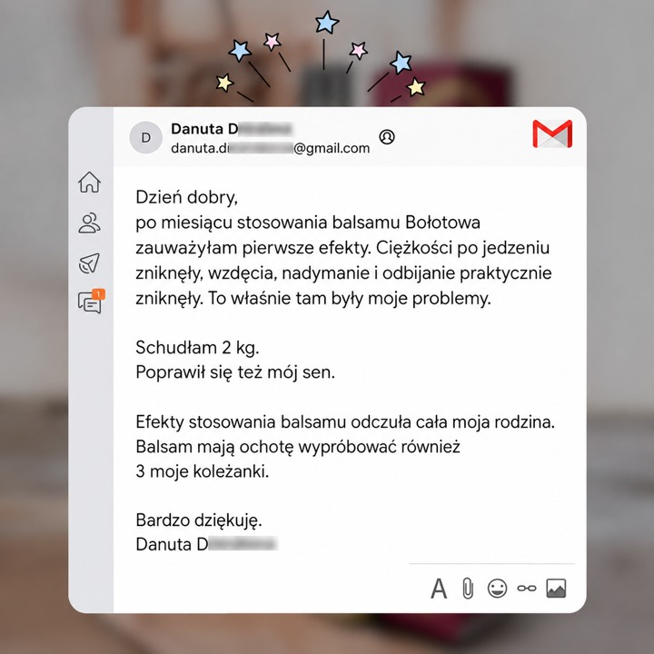
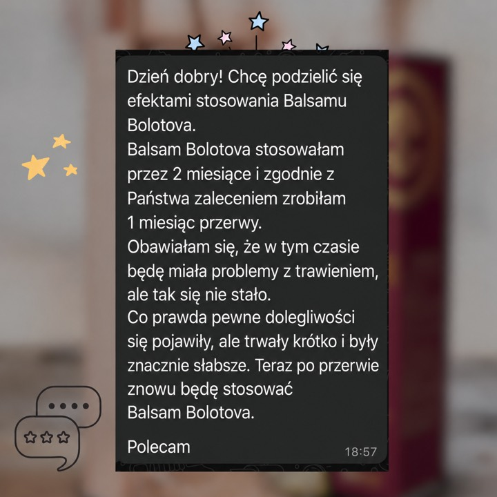
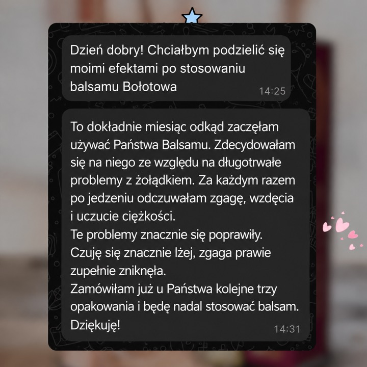

Codzienny komfort trawienny — z witaminą C
Suplement diety na bazie witaminy C.
Balzam Bolotova to suplement diety o unikalnym składzie, opracowany na podstawie receptury akademika Borisa Bołotowa. Wspiera komfort trawienny jako element codziennej, zrównoważonej diety — dla osób, które dbają o lekkość po posiłku i chcą świadomie uzupełnić codzienną dietę.
* Dozwolone oświadczenia zdrowotne dotyczące witaminy C (Rozporządzenie (UE) nr 432/2012).

Balzam dobrze wpisuje się w dietę osób, które dbają o komfort trawienny i lekkość po posiłku, jako element zrównoważonego stylu życia i zdrowego odżywiania.
Witamina C pomaga w prawidłowym funkcjonowaniu układu odpornościowego oraz w ochronie komórek przed stresem oksydacyjnym.*
Witamina C przyczynia się do prawidłowej produkcji kolagenu w celu zapewnienia prawidłowego funkcjonowania skóry.*
Witamina C pomaga w zmniejszeniu uczucia zmęczenia i znużenia oraz w prawidłowym metabolizmie energetycznym.*
* Dozwolone oświadczenia zdrowotne dotyczące witaminy C (Rozporządzenie (UE) nr 432/2012).
Starannie dobrane połączenie składników jakości spożywczej, opracowane na podstawie wiedzy akademika Borisa Bolotova.
Łagodny składnik jakości spożywczej, źródło kwasów organicznych.
Regulator kwasowości stosowany w bezpiecznych, precyzyjnie określonych ilościach.
Regulator kwasowości zgodny z normami przemysłu spożywczego.
Skoncentrowany, bogaty w polifenole i antyoksydanty.
Wspiera odporność i przyczynia się do prawidłowej produkcji kolagenu.*
To precyzyjnie opracowana formuła — odpowiednie połączenie i proporcje składników. Zamiast wielu suplementów oferujemy jeden kompleksowy produkt.

Zamów Balzam Bolotova i włącz go do swojej codziennej rutyny.
Receptura Balzamu Bolotova opiera się na wieloletnich badaniach akademika Borisa Bołotowa. Pochodzenie receptury oraz ochronę nazwy i marki potwierdzają dokumenty i certyfikaty.


Kliknij dowolny certyfikat, aby powiększyć. Pełna lista: Certyfikaty.
gastroenterolog
„Jako specjalista podchodzę do suplementów z ostrożnością. Balzam Bolotova to starannie opracowany produkt na bazie składników jakości spożywczej — dobrze skomponowany dodatek do codziennej diety.”

docent, terapia i medycyna rodzinna
„Balzam Bolotova to ciekawy i dostępny sposób na uzupełnienie codziennej diety o składniki jakości spożywczej. Doceniam przemyślaną recepturę i jakość produktu. To dobry wybór dla osób, które chcą świadomie zadbać o siebie każdego dnia.”
specjalista medycyny ziołowej
„Balzam Bolotova zawiera starannie dobrane składniki o przemyślanych proporcjach. To produkt, za którym stoi wiedza i wieloletnie doświadczenie. Cenię podejście oparte na jakości surowców i przemyślanej recepturze.”



Publikujemy opinie naszych klientów. Opinie pochodzą od osób, które zakupiły produkt; mają charakter indywidualny i nie stanowią obietnicy efektów zdrowotnych. Suplement diety nie jest lekiem.
Składniki jakości spożywczej w precyzyjnie dobranych proporcjach.
Wspiera odporność i ochronę komórek przed stresem oksydacyjnym.*
Witamina C wspiera prawidłową produkcję kolagenu dla skóry.*
Witamina C pomaga w zmniejszeniu uczucia zmęczenia i znużenia.*
Kompleksowa formuła zamiast wielu suplementów.
Łatwo włączyć do codziennej diety — okresowo lub regularnie.
* Dozwolone oświadczenia zdrowotne dotyczące witaminy C (Rozporządzenie (UE) nr 432/2012).
Dodaj 1 łyżeczkę balzamu do 150–200 ml wody, 2–3 razy dziennie podczas posiłku. Aby chronić szkliwo zębów, pij przez słomkę. Nie pij na pusty żołądek. Nie przekraczaj zalecanej dziennej porcji.
Pojemność butelki to 500 ml. Przy standardowym stosowaniu wystarcza na około 1–1,5 miesiąca.
Indywidualna nietolerancja składników, ciąża, karmienie piersią, wiek poniżej 18 lat, choroba wrzodowa i zapalenie żołądka w fazie zaostrzenia, podwyższona kwasowość żołądka, poważne choroby wątroby i nerek. Suplement diety, nie jest lekiem.
Jeśli przyjmujesz leki, zaleca się stosowanie balzamu 30–40 minut przed lub po zażyciu tabletek. W razie wątpliwości skonsultuj się z lekarzem.
Balzam jest suplementem diety i działa jako element codziennej, zrównoważonej diety. Reakcja organizmu jest indywidualna — najlepiej stosować go regularnie, minimum przez 2 tygodnie, w ramach zdrowego stylu życia.
Jedna butelka 500 ml wystarcza zwykle na około 1–1,5 miesiąca. Na pełną, kilkutygodniową kurację najczęściej wybiera się 2–3 butelki — dlatego oferujemy korzystniejsze ceny przy zakupie większej ilości (zobacz ofertę ilościową na stronie produktu).
Balzam zawiera witaminę C, która przyczynia się do prawidłowej produkcji kolagenu — ważnego dla prawidłowego funkcjonowania skóry — oraz pomaga w ochronie komórek przed stresem oksydacyjnym. To wsparcie kondycji skóry od wewnątrz, w ramach zrównoważonej diety (suplement diety, nie jest lekiem).
Balzam jest suplementem diety i nie zastępuje leczenia ani zróżnicowanej diety. W przypadku chorób przewlekłych, przyjmowania leków, ciąży lub karmienia piersią przed zastosowaniem skonsultuj się z lekarzem.

Odbierz BEZPŁATNY przewodnik po systemie Bolotova — proste zasady odżywiania i stylu życia.


{kind=link}
{kind=link}
{kind=link}